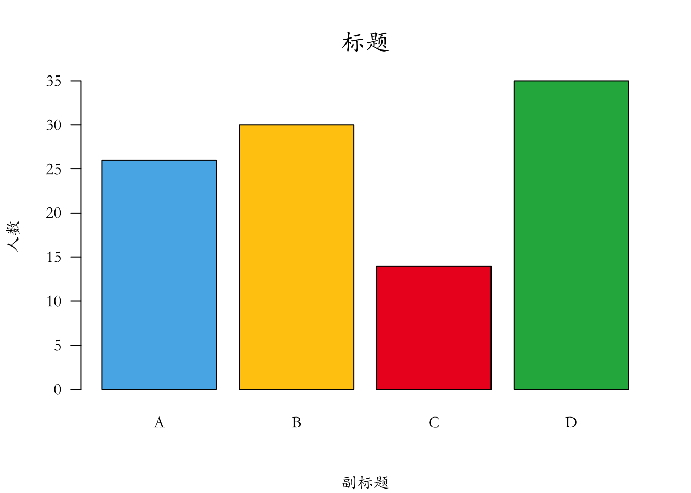
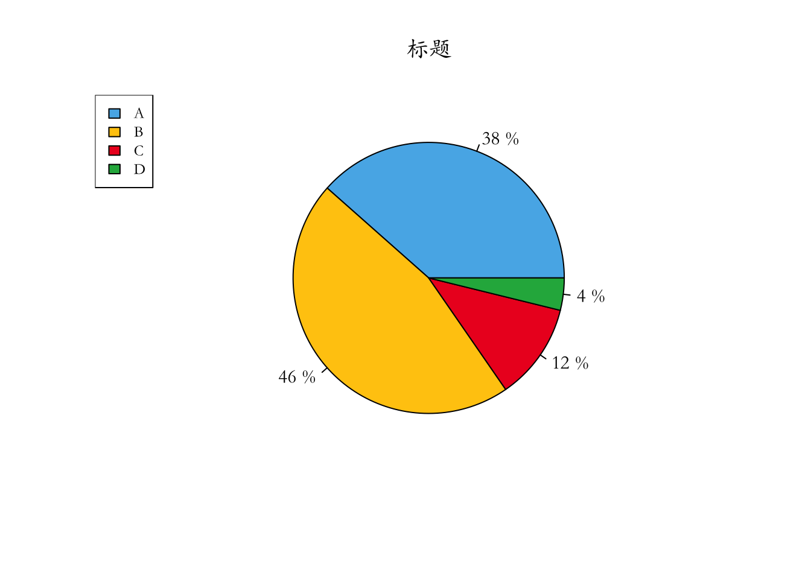
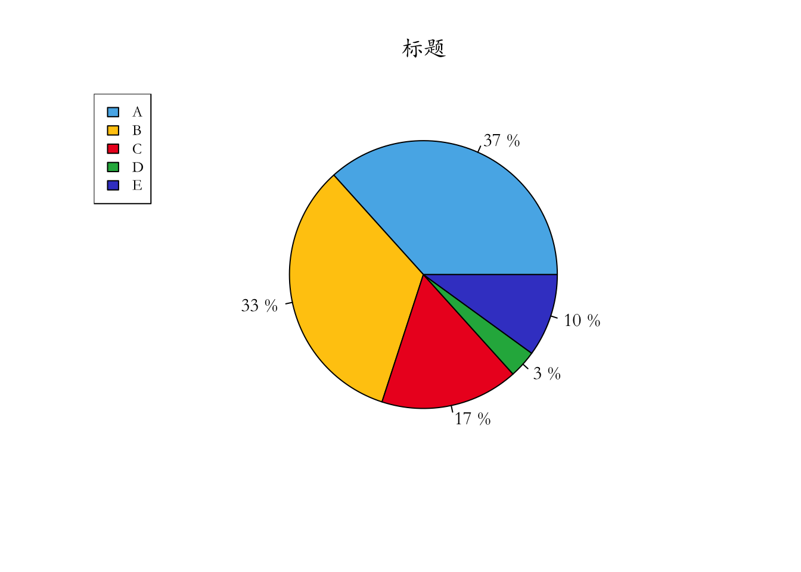

第 4 章 高级绘图函数
4.1 饼图
par(family='STKaiti')
barplot(c(26,30,14,35),axes = FALSE,
main=list('标题',cex=1.5,col='black',font=3),
col=c("#56B4E9","#FFC90E","#ED1C24","#22B14C"),
names.arg=c('A','B','C','D'),
sub='副标题',
ylab='人数'
)
axis(2, at = seq(0,35,5), las = 1)
# 数据准备
info = c(10,12, 3, 1)
names = c("A","B", "C", "D")
cols = c("#56B4E9","#FFC90E","#ED1C24","#22B14C")
# 计算百分比
piepercent = paste(round(100*info/sum(info)), "%")
# 绘图
pie(info, labels=piepercent, main = "标题", col=cols)
# 添加颜色样本标注
legend("topleft", names, cex=0.8, fill=cols)
info = c(11,10,5,1,3)
names = c("A",'B',"C", "D", "E")
cols = c("#56B4E9","#FFC90E","#ED1C24","#22B14C","#3f48CC")
# 计算百分比
piepercent = paste(round(100*info/sum(info)), "%")
# 绘图
pie(info, labels=piepercent, main = "标题", col=cols)
# 添加颜色样本标注
legend("topleft", names, cex=0.8, fill=cols) 